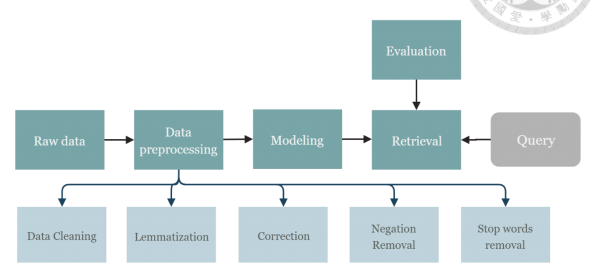

Yu-Chien (Andie) Chang
Intern Associate at Xiri Attorneys, Taiwan
Education
M.S., National Taiwan Uinversity
LL.B., National Taiwan University
Exchange Student, Ludwig-Maximilians-Universität München
Certifications
Taiwan Bar Exam, 2017
Zertifikat Deutsch B1, 2013
Work Experience
Intern Associate, Xiri Attorneys
Research Assistant, National Taiwan University
Software Engineer, National Taiwan University Hospital
Proofreading Assistant, National Taiwan University
Coding and Language
Python, Javascript, HTML, SQL, LaTeX
Mandarin Chinese (Native), English (Advanced), German (Intermediate)

Comparison of similarities between electornic medical records of hospitalized patients with lung cancer
Nowadays, the idea of incorporating individual variabilities for medical treatments have become of great importance, also known as precision medicine or personalized medicine. Precision medicine aims at revolutionizing modern human treatment by combining ...
Nowadays, the idea of incorporating individual variabilities for medical treatments have become of great importance, also known as precision medicine or personalized medicine. Precision medicine aims at revolutionizing modern human treatment by combining patients’ behavior, cellular, molecular, clinical, environmental, genetic parameters. In the research, we analyzed brief history section of discharge summary that included patients’ behaviors and clinical factors. These days, the number of EMRs increased rapidly. Through implementing text-mining techniques on medical records, we on one hand, extended the limit number of patients a physician could see, on the other hand categorized patients and predicted which patients might react similarly to the treatments. Analyzing these EMRs can effectively assist physician in clinical decision- making, provide data support for clinical research as well as personalized healthcare service for patients. In the research, we targeted on inpatients with lung cancer.
Web Service of relevance comparison of Chinese Medical Regulations based on Natural Language Processing
Due to the large scale of regulations being draw up by different departments in National Taiwan University Hospital. When one apartment drafts the regulation, they might overlook the content of regulations that already been laid down by other departments, which results in conflict or repeat between regulations. ...
Due to the large scale of regulations being draw up by different departments in National Taiwan University Hospital. When one apartment drafts the regulation, they might overlook the content of regulations that already been laid down by other departments, which results in conflict or repeat between regulations. To solve the problem, we establish a web platform to return the ranking list of most likely related regulations to users. We implement Jieba library to undertake Chinese word segmentation, besides the built-up dictionary, we extend it with uncommon legal medical terms on the basis of the regulations. Afterwards, we use word2vec model to yield word embedding and TF-IDF algorithm to extract keywords of each regulation. We then apply Okapi BM25 probabilistic retrieval framework to rank each regulation documents according to their relevance. We also implement relevance feedback by letting users scrutinize the result, and include the keywords of relevant regulation documents to the search base. So far, we have analyzed total number of 439 regulation documents and the tool provides pleasing aid of compilation and auditing regulations. However, evaluation of unsupervised learning is a difficult task. Therefore, we provide a users’ feedback function to optimize the model and will also augment the result by enlarging the database in the future.
<